토목산업기사 (2007-05-13 기출문제)
1과목: 응용역학
1. 그림과 같은 보의 고정단 A의 휨 모멘트는?
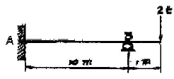
- 1 t・m
- 2 t・m
- 3 t・m
- 4 t・m
(정답률: 알수없음)

2. 4분원의 도심을 지나는 X축에 대한 단면 2차 모멘트?
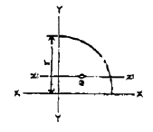
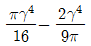
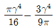
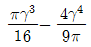
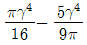
(정답률: 30%)
3. 다음 그림에서 사선부분의 도심축 X에 대한 단면 2차 모멘트는?
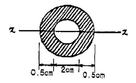
- 3.19 cm4
- 2.19 cm4
- 1.19 cm4
- 0.19 cm4
(정답률: 알수없음)
4. 아래 그림과 같은 단순보의 지점 A로부터 최대 휨모멘트가 생기는 위치는?
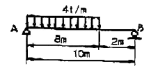
- 4.8 m
- 5 m
- 5.2 m
- 5.4m
(정답률: 60%)
5. 지간 8m, 높이 30cm, 폭 20cm의 단면을 갖는 단순보에 등분포 하중 w=400kg/m가 만재하여 있을 때 최대 처짐은? (단, E = 100,000 kg/cm3)
- 4.74 cm
- 2.10 cm
- 0.90 cm
- 0.009 cm
(정답률: 알수없음)
6. 그림과 같은 캔틸레버보에서 B점의 처짐각은?
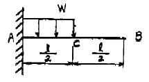
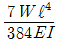
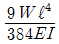
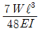
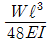
(정답률: 20%)
7. 합력 100kg이 2개의 분력 P1=80kg, P2=50kg로 분해될 때 2개의 분력 P1, P2 가 이루는 각은 몇 도인가?
- 70.7°
- 75.0°
- 78.6°
- 82.1°
(정답률: 알수없음)
8. 다음 그림에서 지점 A의 연직 반력(RA)과 모멘트 반력(MA)의 크기는?
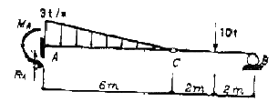
- RA= 9.0 t, MA= 4.5 t・m
- RA= 9.0 t, MA= 18 t・m
- RA= 14.0 t, MA= 48 t・m
- RA= 14.0 t, MA= 58 t・m
(정답률: 알수없음)
9. 3면 모멘트 방정식의 사용처로 가장 적당한 것은?
- 트러스 해석
- 연속보 해석
- 케이블 해석
- 아치 해석
(정답률: 알수없음)
10. 그림과 같은 구조물에서 T가 받는 힘의 크기는?
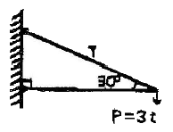
- 6t
- 5t
- 4t
- 3t
(정답률: 알수없음)
11. 그림과 같이 양단 고정인 기둥의 좌굴응력을 오일러(Euler)의 공식에 의하여 계산한 값은? (단, 기둥단면은 그림과 같으며 ( , E = 4.0 × 105kg/cm2)
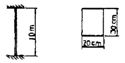
- 635 kg/cm2
- 458 kg/cm2
- 783 kg/cm2
- 526 kg/cm2
(정답률: 알수없음)
12. 지름이 D인 원형단면보에 휨모멘트 M이 작용할 때 최대 휨응력은?
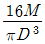
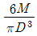
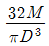
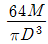
(정답률: 90%)
13. “탄성체가 가지고 있는 탄성변형 에너지를 작용하고 있는 하중으로 편미분하면 그 하중점에서의 작용방향의 변위가 된다”는 것은 어떤 이론인가?
- 맥스웰(Maxwell)의 상반정리이다.
- 모아(Mohr)의 모멘트-면적정리이다.
- 카스틸리아노(Castigllano)의 제 2정리이다.
- 클래페이튼(Clapeyron)의 3면 모멘트법이다.
(정답률: 알수없음)
14. 단면적 A=20cm2, 길이 L=50cm인 강봉에 인장력 P=8t을 가하였더니 길이가 0.1mm 늘어났다. 이 강봉의 포아송수 m=3 이라면 전단 탄성계수 G는 얼마인가?
- 750,000kg/cm2
- 75,000kg/cm2
- 250,000kg/cm2
- 25,000kg/cm2
(정답률: 알수없음)
15. σx가 그림과 같이 작용할 때 1-2 단면에 작용하는 σn(normal stress)의 값은?
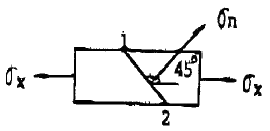
- σx
- 2σx
- σx / 2
- 3σx
(정답률: 알수없음)
16. 그림과 같은 내민보에서 D점의 휨모멘트가 맞는 것은?
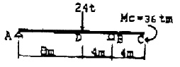
- -32 t・m
- 160 t・m
- 88 t・m
- 40 t・m
(정답률: 알수없음)
17. 다음과 같은 단순보의 양단에 모멘트 하중 M이 작용할 경우 최대 처짐은? (단, EI는 일정)
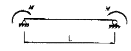
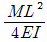
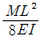
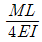
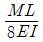
(정답률: 알수없음)
18. 그림과 같은 3활절 정정아치 구조물에서 A점의 수평반력 HA를 구하면?
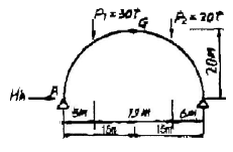
- 6.35 t
- 6.55 t
- 6.75 t
- 6.95 t
(정답률: 알수없음)
19. 다음 그림과 같은 구조물의 0점에 모멘트 하중 8 t・m 가 작용할 때 모멘트 Mco 의 값을 구한 것은?
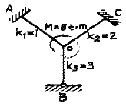
- 4.0 t・m
- 3.5 t・m
- 2.5 t・m
- 1.5 t・m
(정답률: 알수없음)
20. 그림과 같은 라멘에서 C점의 휨모멘트는?
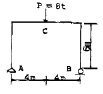
- 12 t・m
- 16 t・m
- 24 t・m
- 32 t・m
(정답률: 알수없음)
2과목: 측량학
21. 하천측량을 실시하는 주목적으로 옳은 것은?
- 하천공사의 비용을 알기 위해
- 하천공사의 각종 설계, 시공에 필요한 자료를 얻기 위해
- 하천의 수위, 기울기, 단면을 알기 위해
- 하천의 평면도, 단면도를 얻기 위해
(정답률: 알수없음)
22. 삼각측량에서 B점의 좌표 XB = 50,000, YB = 200,000, BC의 길이 25.478m, BC의 방위각 77° 11′ 56″ 일 때 C 점의 좌표는?
- XC = 26,165 m, YC = 2⑤,645 m
- XC = 55,645 m, YC = 224,845 m
- XC = 74,165 m, YC = 194,355 m
- XC = 74,845 m, YC = 2⑤,645 m
(정답률: 알수없음)
23. 3km의 거리를 30m의 테이프로 측정하였을 때 1회 측정의 부정오차를 ±4mm로 보면 부정오차의 총합은?
- ±30mm
- ±35mm
- ±40mm
- ±45mm
(정답률: 알수없음)
24. 수준측량에서 당장 PQ 가 있어, P 점에서 표척을 QP 방향으로 거꾸로 세워 아래 그림과 같은 결과를 얻었다. A점의 표고 HA = 51.25m 이면 B점의 표고는?
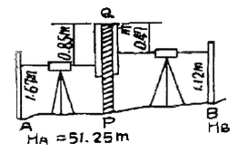
- 51.42 m
- 52.18 m
- 51.08 m
- 52.22 m
(정답률: 알수없음)
25. 단곡선 설치에서 교점(I, P)까지의 추가거리가 525,50m 접선장(T, L)이 320m 라고 할 때 시단현의 길이는? (단, 중심 말뚝간의 거리는 20m)
- 5.50 m
- 9.50 m
- 14.50 m
- 17.50 m
(정답률: 알수없음)
26. 1/25000 지형도상에서 면적을 측정한 결과가 84cm2 이었을 때 실제면적은?
- 6.25 km2
- 5.25 km2
- 4.25 km2
- 3.25 km2
(정답률: 알수없음)
27. 다음 그림에서
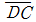
의 방위는?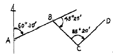
- N 11° 15′ E
- S 11° 15′ W
- N 20° 35′ E
- S 20° 35′ W
(정답률: 알수없음)
28. 노선측량에서 노선선정을 할 때 가장 중요한 요소는?
- 곡선의 대소(大小)
- 공사기일
- 곡선설치의 난이도
- 수송량 및 경제성
(정답률: 알수없음)
29. 평판의 중심으로부터 측점까지의 사거리가 35m이고, 이 때 잃은 앨리데이드의 경사뿐획이 15라고 한다면 두 점간의 수평거리는?
- 34.613m
- 33.613m
- 32.613m
- 31.613m
(정답률: 알수없음)
30. 노선측량에서 곡선의 분류에 대한 설명으로 틀린 것은?
- 곡선은 크게 평면곡선과 수직곡선으로 나눌 수 있다.
- 반향곡선은 평면곡선 중 원곡선에 속한다.
- 3차 포물선은 평면곡선 중 완화곡선에 속한다.
- 램니스케이트는 수직곡선 중 종단곡선에 속한다.
(정답률: 알수없음)
31. 화면거리(principal distance)가 150mm, 비행고도 3000m 일 때 항공사진의 축적은?
- 1：5000
- 1：10000
- 1：15000
- 1：20000
(정답률: 알수없음)
32. 초점거리가 150mm이고 사진축척이 1/40000 일 때 도화기의 C = 계수가 1200 이면 도화할 수 있는 최소등고선의 간격은?
- 3m
- 5m
- 7m
- 9m
(정답률: 알수없음)
33. 우리나라의 1：50000 축척 지형도에서 주곡선의 간격은 얼마인가?
- 5m
- 10m
- 20m
- 50m
(정답률: 알수없음)
34. 단곡선 설치에서 교각 I = 60°, 곡선 반지름 R = 200m 일 때 곡선길이 (C, L)는?
- 187.3m
- 193.6m
- 209.4m
- 213.7m
(정답률: 30%)
35. 다음의 수평각 α, β 및 γ를 같은 정도로 측정하였을 때 ∠AOC 의 최곽치는?
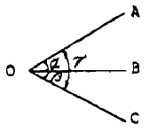
- 65° 36′ 56″
- 65° 37′ 04″
- 65° 38′ 52″
- 65° 37′ 08″
(정답률: 알수없음)
36. 교호수준 측량을 실시하여 다음의 결과를 얻었다. A점의 표고가 25.020m 일 때 B점의 표고는 얼마인가?(오류 신고가 접수된 문제입니다. 반드시 정답과 해설을 확인하시기 바랍니다.)
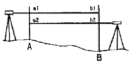
- 23.065 m
- 23.575 m
- 26.465 m
- 26.975 m
(정답률: 알수없음)
37. 토공작업을 수반하는 종단면도에 계획선을 넣을 때 염두에 두어야 할 것으로 옳지 않은 것은?
- 점토량과 성토량은 거의 같게 한다.
- 점토는 성토로 이용할 수 있도록 운반거리를 고려해야 한다.
- 계획선은 될 수 있는 한 요구에 맞게 한다.
- 경사와 곡선을 병설해야 하고 단조로움을 피하기 위해 가능한 많이 설치한다.
(정답률: 알수없음)
38. 우리나라의 특량기준원점에 대한 설명 중 틀린 것은?
- 지구상 제점의 슈평위치는 경도와 위도로 표시함을 원칙으로 한다.
- 평면직교좌표는 동서측을 X축, 남북축을 Y축으로 하고 있다.
- 육지 표고의 기준은 평균해수면을 기준으로 한다.
- 경도, 위도는 삼각점을 기준으로 축지측량, 천문측량, 위성측량에 의해 구한다.
(정답률: 알수없음)
39. 터널 양 끝단의 기준점 A,B를 포함해서 트래버스 측량 및 수준측량을 실시하여 다음의 결과를 얻었다면 AB간의 경사거리는 얼마인가?
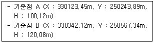
- 290.94m
- 390.941m
- 490.941m
- 590.941m
(정답률: 알수없음)
40. A, B, C 3명이 동일조건에서 어떤 거리를 측정하여 다음의 결과를 얻었다면 최확값은 얼마인가?
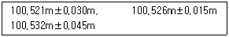
- 100.521m
- 100.526m
- 100.531m
- 100.533m
(정답률: 알수없음)
3과목: 수리학
41. Darcy의 법칙을 지하수에 적용시킬 때 가장 잘 일치하는 흐름은?
- 층류
- 난류
- 사류
- 상류
(정답률: 91%)
42. 다음 그림에서 CCl4(4염화탄소)의 비중은?
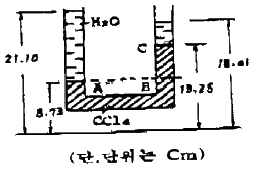
- 0.1595
- 1.595
- 15.95
- 159.5
(정답률: 알수없음)
43. 내경 2cm의 관내를 수온 20℃의 물이 25cm/sec의 유속을 갖고 흐를 때 이흐름의 상태는? (단, 20℃일 때의 물의 동점성계수 v=0.01cm2/sec)
- 상류
- 층류
- 난류
- 불완전 층류
(정답률: 알수없음)
44. 개수로의 흐름을 상류(常流)와 사류(射流)로 구분할 때 기준으로 사용할 수 없는 것은?
- 후루드 수(Froude number)
- 한계유속(critical velocity)
- 한계수심(critical depth)
- 레이놀즈 수(Reynolds number)
(정답률: 알수없음)
45. 다음 중 Dupuit의 침윤선(浸潤線)공식은? (단, 직사각형 단면 제방 내무의 투수인 경우이며, 제방의 저면은 불투수층이고, q : 단위폭당 유량, L : 침윤거리, 상하류의 수위 : h1, h2, k : 투수계수)
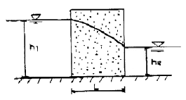
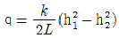
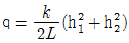
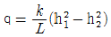
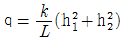
(정답률: 알수없음)
46. 오리피스(orifice)에서 수축계수 Ca, 유속계수 Cv, 유량계수 C 와의 관계식을 바르게 나타낸 것은?
- C = Cv · Ca
- C = Cv - Ca
- C = Cv / Ca
- C = Ca + Cv
(정답률: 알수없음)
47. 지름 3m인 원통이 수평으로 가로 놓여 있다. 원총의 상단까지 만수가 되었을 때 이 수문의 단위 폭(1m)에 작용하는 전압력의 연직성분은?
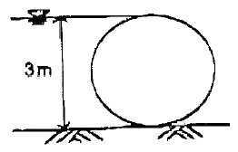
- 3.53kg
- 35.3kg
- 3.53ton
- 35.3ton
(정답률: 알수없음)
48. 최대평균우량 깊이-유역면적-강우지속시간(DAD) 관계곡선에 관한 설명 중 틀린 것은?
- 곡선 작성시 대상유역의 지속시간별 강우량이 필요하다.
- 최대평균우량은 지속시간이 커질수록 증가한다.
- 최대평균우량은 유역면적이 커질수록 작아진다.
- 최대평균우량은 재현기간이 커질수록 작아진다.
(정답률: 알수없음)
49. 개수로의 설계와 수골 구조물의 설계에 주로 적용되는 수리학적 상사법칙은?
- Reynolds 상사법칙
- Froude 상사법칙
- Weber 상사법칙
- Mach 상사법칙
(정답률: 알수없음)
50. 몰에 대한 성질을 설명한 것 중 틀린 것은?
- 내부마찰력이 큰 것은 내부마찰력이 작은 것보다 그 점성계수의 값이 크다.
- 물의 압축률(Cw)과 체적탄성계수(Ew)는 서로 역수의 관계가 있다.
- 물의 점성계수는 수온(°C)이 높을수록 그 값이 커지고 수온이 낮을수록 그 값은 작아진다.
- 물은 특별한 경우를 제외하고는 일반적으로 비압축성 유체로 취급한다.
(정답률: 알수없음)
51. 다음 표에서 Thiessen법으로 유역평균우량을 구한 값은?
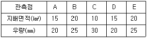
- 25.25mm
- 26.25mm
- 27.25mm
- 0.20mm
(정답률: 알수없음)
52. 다음 중 누가우량곡선(Rainfall mass cuve)에 대한 설명으로 옳은 것은?
- 누가우량곡선의 경사가 클수록 강우강도가 작다.
- 누가우량곡선의 경사는 지역에 관계없이 일정하다.
- 자기우량기록계에 의한 자기우량기록지는 누가 우량곡선의 한 예이다.
- 누가우량곡선으로부터 일정 기간내의 강우량을 산출할 수는 없다.
(정답률: 30%)
53. 부체가 물 위에 떠 있다. 부체의 중심과 부심과의 거리를 e, 부심과 경심과의 거리를 a, 경심에서 중심까지의 거리를 b라 할 때, 부체의 안정조건은?
- a ＜ b
- a ＞ e
- b ＜ e
- b ＞ e
(정답률: 알수없음)
54. 모세관현상에서 액체기둥의 상승 또는 하강 높이의 크기를 결정하는 힘은 어느 것인가?
- 응집력
- 부착력
- 표면장력
- 마찰력
(정답률: 알수없음)
55. 단면 50cm × 50cm, 길이 4m, 단의중량 0.7g/cm3의 물체를 오나전히 물속에 잠기게 하기 위하여 최소 얼마의 힘을 가해야 하는가?
- 0.2ton
- 0.3ton
- 0.4ton
- 0.5ton
(정답률: 알수없음)
56. 그림과 같이 경사진 내경 2m의 원관내에 유량 20m3/sec의 물을 흐르게 할 경우 단면 1과 2 사이의 손실 수두는? (단, 단면 1의 압력 = 3.0kg/cm2, 단면 2의 압력 = 3.1kg/cm2)
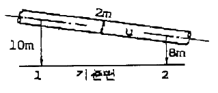
- 1.0m
- 2.0m
- 3.0m
- 4.0m
(정답률: 알수없음)
57. 다음의 4개 지점 강우량 관측자료에서 강우강도가 최대가 되는 지점은?
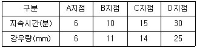
- A
- B
- C
- D
(정답률: 알수없음)
58. 지름이 D인 관수로에서 만관으로 흐를 때 경심 R은?
- D
- D/2
- D/4
- 2D
(정답률: 알수없음)
59. 하천수를 펌프(pump)로 양수할 때 유량을 Q, 낙차를 H, 층손실 수두를 ΣhL 흐름을 n라 할 때 펌프의 출력(kw)을 구하는 식은?
- 9.8Q(H-ΣhL)n
- 13.3Q(H+ΣhL)n
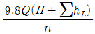
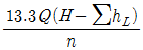
(정답률: 알수없음)
60. 삼각위어에서 수두 h의 측정에 2%의 오차가 발생하면 유량에는 몇 %의 오차가 발생되는가?
- 2%
- 3%
- 4%
- 5%
(정답률: 알수없음)
4과목: 철근콘크리트 및 강구조
61. 강도감소계수(ø)에 대한 설명 중 틀린 것은?
- 설계 및 시공상의 오차를 고려한 값이다.
- 하중의 종류와 조합에 따라 값이 달라진다.
- 휨에 대한 강도감소계수는 0.85 이다.
- 전단과 비틀림에 대한 강도감소계수는 0.80이다.
(정답률: 알수없음)
62. b = 200mm, d = 500mm, As = 1000mm2인 단철근 직사각형 보의 중립축 위치 c값은? (단, fck = 21MPa, fy = 280MPa)
- c = 62.3mm
- c = 78.4mm
- c = 88.4mm
- c = 92.3mm
(정답률: 알수없음)
63. 축방향 압축력 P=1800kn, 흙의 허용지지력 qa = 2MPa인 정사각형 확대기초의 저판의 한변 길이는 최소 얼마인가?
- 2m
- 3m
- 4m
- 5m
(정답률: 알수없음)
64. 그림과 같은 단철근-직사각형 보의 단면에서 최대 정철근량은 약 얼마인가? (단, fck = 21MPa, fy = 350MPa)
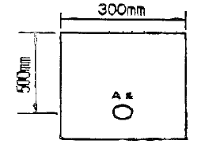
- 5280mm2
- 4580mm2
- 3080mm2
- 2580mm2
(정답률: 알수없음)
65. 강도 이론에 의한 나선철근 기둥의 설계 축하중강도(øPn)는 얼마인가? (단, 기둥의 Ag = 200000mm2, Agt = 6 - D35 = 5700mm2, fck = 21MPa, fy = 300MPa)
- 2957 kn
- 3000 kn
- 3089 kn
- 3301 kn
(정답률: 28%)
66. 다음의 L형강에서 단면의 순단면을 구하기 위하여 전개한 종폭(bg)은 얼마인가?
- 250 mm
- 264 mm
- 288 mm
- 300 mm
(정답률: 알수없음)
67. 강도설계법에 의해서 전단철근을 사용하지 않고 계수하중에 의한 전단력 40kn을 지지할 수 있는 직사각형보의 최소단면적(bw × d)은 얼마인가? (단, fck = 21MPa)
- 114452mm2
- 130931mm2
- 186264mm2
- 198407mm2
(정답률: 알수없음)
68. 다음 그림에서 주철근의 배근이 잘못된 것은?
(정답률: 알수없음)
69. 단철근 직사각형보를 강도설계법으로 해석할 때, 그 철근비를 0.75Pb 이하로 규제하는 주된 이유는?
- 부재의 경제적인 단면을 설계하기 위하여
- 철근이 먼저 항복하는 것을 막기 위하여
- 압축으로 인한 콘크리트의 취성 파괴를 피하기 위하여
- 처짐을 감소시키기 위하여
(정답률: 알수없음)
70. 옹벽의 안정에 관한 다음 내용 중 잘못된 것은?
- 활동에 대한 저항력은 옹벽에 작용하는 수평력의 1.5배 이상이라야 한다.
- 전도에 대한 저항모멘트는 횡토압에 의한 전도모멘트의 2배 이상이라야 한다.
- 지반에 작용하는 최대 압력이 지반의 허용지지력을 초과하지 않아야 한다.
- 기초지반에 작용하는 외력의 합력 작용점은 반드시 저판 중앙 1/3안에 위치해야 한다.
(정답률: 알수없음)
71. 프리스트레스의 손실원인은 크게 프리스트레스를 도입할 때 일어나는 손실과 프리스트레스 도입 후 일어나는 손실로 구분할 수 있다. 다음 중 프리스트레스를 도입할 때 일어나는 손실원인이 아닌 것은?
- 콘크리트의 탄성변형
- PS강재와 쉬스 사이의 마찰
- 콘크리트의 건조수축
- 정착단의 활동
(정답률: 알수없음)
72. 양단정착하는 포스텐션∙부재에서 1단의 정착부 활동이 1.5mm생겼다. PS강재의 길이가 25m, 초기 프리스트레스가 1500MPa일 때, 프리스트레스의 감소를(%)은 얼마인가?
- 4.0%
- 3.3%
- 2.4%
- 1.6%
(정답률: 9%)
73. 파셜 프리스트레스 보(partially prestressed beam)란 어떤 보인가?
- 사용하중 하에서 인장응력이 일어나지 않도록 설계된 보
- 사용하중 하에서 얼마간의 인장응력이 일어나도록 설계된 보
- 계수하중 하에서 인장응력이 일어나지 않도록 설계된 보
- 부분적으로 철근 보강된 보
(정답률: 알수없음)
74. 인장 이형철근의 정착길이는 계산에 의해 구할 수 있는 기본정착길이에 보정계수를 곱하여 구한다. 이러한 보정계수 중 평균 쪼갬인장강도(fø)가 주어지지 않은 경량콘크리트에 적용되는 보정계수(β)값으로 옳은 것은?
- 1.2
- 1.3
- 1.5
- 1.6
(정답률: 알수없음)
75. 현장치기 콘크리트에서 콘크리트 치기로부터 흙에 접하여 콘크리트를 친 후 영구히 흙에 묻혀있는 콘크리트의 피복두께는 최소 얼마 이상이어야 하는가?
- 120mm
- 100mm
- 80mm
- 60mm
(정답률: 알수없음)
76. 유효깊이가 800mm인 철근콘크리트보를 강도설계법에 의해 설계했을 때, 전단철근이 부담하는 전단력 VS가 를 초과한다면 수직스터럴을 배치할 때 최대간격은 얼마인가? (단, fck : 콘크리트의 설계기준강도, bw : 보의 폭, d : 보의 유효깊이)
- 200mm
- 400mm
- 600mm
- 800mm
(정답률: 알수없음)
77. 대칭 T형 콘크리트 단면에서 플랜지의 유효폭 산정시 고려해야 할 사항으로 틀린 것은? (단, tf = 플랜지의 두께, bw = 플랜지가 있는 부재에서의 복부폭을 의미한다.)
- 16tf + bw
- 양쪽 슬래브의 중심 간 거리
- 보의 경간의 1/4
- (인접 보와의 내측 거리의 1/2) + bw
(정답률: 60%)
78. 인장이나 압축을 받는 이형철근의 정착길이는 다음 무엇과 반비례하는가?
- 철근의 공칭지름
- 철근의 단면적
- 철근의 설계기준항복강도
- 콘크리트 설계기준강도의 평방근
(정답률: 알수없음)
79. 그림과 같은 T형보에서 플랜지 부분의 압축력과 균형을 이루기 위한 철근단면적 Asf는 얼마인가? (단, fck = 21MPa, fy = 420MPa)
- 1025mm2
- 1275mm2
- 1485mm2
- 1675mm2
(정답률: 알수없음)
80. 그림과 같이 400mm×12mm의 강판을 통 용접하려 한다. 500kN의 인장력이 작용하면 용접부에 일어나는 응력은 얼마인가? (단, 전단면을 유효길이로 한다.)
- 92.2MPa
- 98.2MPa
- 101.2MPa
- 104.2MPa
(정답률: 43%)
5과목: 토질 및 기초
81. 무게 100kg인 해머로 2m 높이에서 말뚝을 박았더니 침하량이 2cm였다. 이 말뚝의 허용 지지력을 Snader 공식으로 구한 값은? (단, 안전율 FB = 8을 적용한다.)
- 1.25t
- 2.5t
- 5t
- 10t
(정답률: 알수없음)
82. 50t의 집중하중이 지표면에 작용할 때 3m 떨어진 점의 지하 5m 위치에서의 연직응력은 얼마인가? (단, 영향계수는 0.2214이다.)
- 0.392t/m2
- 0.443t/m2
- 0.526t/m2
- 0.610t/m2
(정답률: 25%)
83. 스톡스(stokes)의 법칙에 관한 다음 설명 중 틀린 것은?
- 침강 속도는 토립자 지름의 제곱에 비례한다.
- 침강 속도는 중력의 가속도에 비례한다.
- 흙입자의 비중이 클수록 침강속도가 빠르다.
- 침강 속도는 물의 점성계수에 비례한다.
(정답률: 알수없음)
84. 점착력이 0.8t/m2, 단위중량이 1.6t/m3, 내부마찰각이 30°인 흙에 있어서 점착고(粘簎高)는?
- 0.58m
- 1.73m
- 2.02m
- 3.46m
(정답률: 알수없음)
85. 10개의 무리 말뚝기초에 있어서 효율이 0.8, 단항으로 계산한 말뚝 1개의 허용지지력이 10t일 때 군항의 허용 지지력은?
- 50t
- 80t
- 100t
- 125t
(정답률: 알수없음)
86. 흙의 다짐에 대하여 설명한 것 중 옳지 않은 것은?
- 같은 다짐방법에서는 최적 함수비가 작은 흙일수록 최대 건조밀도가 작다.
- 흙이 조립토에 가까울수록 최적 함수비의 값은 작다.
- 최적 함수비는 흙의 종류와 다짐방법에 따라 다른 값이 나온다.
- 다짐에너지가 커지면 최적 함수비는 작아진다.
(정답률: 알수없음)
87. 현장밀도시험의 결과로부터 건조밀도(γd)를 구하는 식으로 옳은 것은? (단, V : 시험구멍의 부피, W : 시험구멍에서 파낸 흙의 습윤중량, w : 시험구멍에서 파낸 흙의 함수비)
(정답률: 알수없음)
88. 부피 100cm3의 시료가 있다. 적은 흙의 무게가 180g 인데 건조 후 무게를 측정하니 140g이었다. 이 흙의 간극비는? (단, 이 흙의 비중은 2.65이다.)
- 1.472
- 0.893
- 0.627
- 0.470
(정답률: 알수없음)
89. 흙의 동상에 대한 방지대책으로 잘못된 것은?
- 배수구를 설치하여 지하수위를 낮추는 방법
- 지표의 흙을 화학 약맥으로 처리하는 방법
- 동결심도 아래 있는 흙을 사질토로 치환하는 방법
- 흙속에 단열재료를 매설하는 방법
(정답률: 60%)
90. 입경가적곡선에서 D10=0.⑤mm, D30=0.006mm, D60=0.15mm 인 경우 균등계수(Cm)와 곡률계수(Cg)를 구하면?
- Cm = 3.0, Cg =0.48
- Cm = 3.0, Cg =8.00
- Cm = 0.3, Cg =0.48
- Cm = 0.3, Cg =8.00
(정답률: 80%)
91. 다음 중 직접기초에 속하지 않는 것은?
- 독립기초
- 복합기초
- 전면기초
- 말뚝기초
(정답률: 70%)
92. 흙의 입도분석 결과 입경가적 곡선이 입경의 좁은 범위 내에 대부분이 몰려있는 입도분포가 나쁜 빈입도(poor grading)일 때 다음 중 옳지 않은 설명은?
- 균등계수는 작을 것이다.
- 간극비가 클 것이다.
- 다짐에 적합한 흙이 아닐 것이다.
- 투수계수가 낮을 것이다.
(정답률: 알수없음)
93. 포화 점토층의 두께가 6.0m이고 점토층 위와 아래는 모래층이다. 이 점토층이 최종 압밀 침하량의 70%를 일으키는데 걸리는 기간은 몇 일 인가? (단, 압밀계수 CV = 3.6×10-3 cm2/sec이고, 압밀도 70%에 대한 시간계수 TV = 0.403이다.)
- 116.6일
- 342일
- 232.2일
- 466.4일
(정답률: 알수없음)
94. 분할법으로 사면안정 해석 시에 제일 먼저 결정되어야 할 사항은?
- 분할 세편의 중량
- 활동면상의 마찰력
- 가상 활동면
- 각 세편의 간극수압
(정답률: 100%)
95. 흐트러진 흙을 자연 상태의 흙과 비교하였을 때 잘못된 설명은?
- 투수성이 크다.
- 간극이 크다.
- 전단강도가 크다.
- 압축성이 크다.
(정답률: 55%)
96. 다음의 사질토지반에 대한 개량공법과 가장 거리가 먼 것은?
- 다짐말뚝공법
- 다짐모래말뚝공법
- Sand Drain공법
- Vibro foltation공법
(정답률: 알수없음)
97. 어떤 모래의 입경가적공선에서 유효입경 D10=0.01mm이었다. Hazen 공식에 의한 투수계수는? (단, 상수(c)는 100을 적용한다.)
- 1×10-4cm/sec
- 1×10-6cm/sec
- 5×10-4cm/sec
- 5×10-6cm/sec
(정답률: 알수없음)
98. 다음 상대밀도에 대한 설명으로 옳은 것은?
- 주로 점토와 같은 세립토에 사용된다.
- 상대밀도가 60%정도이면 느슨한 상태이다.
- 보통 진동 다짐에 의하여 θmax, 건조모래를 가만히 유입함으로서 θmin을 측정한다.
- 흙의 조밀 또는 느슨한 상태를 알고자 할 때 간극비만으로는 명확하지 못하므로 상대밀도를 사용한다.
(정답률: 알수없음)
99. 어떤 시료에 대한 일축압축 시험의 결과 파괴 압축강도가 3kg/cm2일 때 수평면과 45°을 이루는 파괴면이 생겼다면 내부 마찰각 ø와 접착력 C는?
- ø = 0, C = 1.5kg/cm2
- ø = 0, C = 3kg/cm2
- ø = 90°, C = 1.5kg/cm2
- ø = 45°, C = 0
(정답률: 알수없음)
100. 모래질 지반에 30cm×30cm 크기로 재하 시험을 한 결과 15t/m2의 극한 지지력을 얻었다. 2m×2m의 기초를 설치할 때 기대되는 극한 지지력은?
- 100t/m2
- 50t/m2
- 30t/m2
- 22.5t/m2
(정답률: 34%)
6과목: 상하수도공학
101. 폭 2m인 직사각형 개수로에 수심 1m의 물이 흐르고 있다. Manning의 조도계수는 0.015이고 관로의 경사가 1/1000일 때 도수로에 흐르는 유량은?
- 1.33m3/sec
- 2.66m3/sec
- 5.32m3/sec
- 6.22m3/sec
(정답률: 알수없음)
102. 수질검사에서 대장균을 검사하는 이유는?
- 대장균이 병원체이므로
- 대장균을 이용하여 다른 병원체의 존재를 추정하기 위하여
- 수질오염을 가져오는 대표적인 세균이므로
- 물을 부패시키는 세균이므로
(정답률: 알수없음)
103. 합류식과 분류식 하수관로의 특징에 관한 다음 설명 중 가장 거리가 먼 것은?
- 분류식은 합류식에 비해 오접합의 우려가 적다.
- 합류식은 분류식에 비해 처리장으로 다량의 토사유입이 있을 수 있다.
- 합류식은 분류식에 비해 청소, 검사 등이 유리하다.
- 분류식은 합류식에 비해 수세효과를 기대할 수 있다.
(정답률: 알수없음)
104. 활성슬러지 공정의 2차 침전지를 설계하는데 다음과 같은 기준을 사용하였다. 이 침전지의 수리학적 체류 시간은? (단, 유입수량=5000m3/day, 표면부하율=30m3/m2day, 수심 3.5m)
- 2.8시간
- 3.5시간
- 4.3시간
- 5.2시간
(정답률: 알수없음)
1⑤. 다음 중 오수관거, 우수관거 및 합류관거에서의 이상적인 유속으로 가장 적당한 범위는?
- 1.0 ~ 1.8 m/sec
- 3.0 ~ 4.2 m/sec
- 5.5 ~ 7.0 m/sec
- 10.0 m/sec 이상
(정답률: 알수없음)
106. 취수시설을 선정할 때 수원(水原)이 하천, 호소, 댐(저수지)인 경우에 적용할 수 있으며 보통 대량취수에 적합하고 비교적 안정된 취수가 가능한 것은?
- 취수탑
- 깊은우물
- 취수률
- 취수관거
(정답률: 알수없음)
107. 약품교반시험(Jar test)은 다음화약품 중 어느 것의 적정 주입량을 측정하는데 주로 사용되는가?
- 염소
- 불소
- 마그네슘
- 황산 알루미늄(Alum)
(정답률: 알수없음)
108. 4인 가족(부부, 자녀 2인)의 한달 동안의 수돗물 사용량과 수세식 화장실에서의 사용량은 어느 정도인가?
- 사용수량 : 21.6m3, 화장실 사용수량 : 4.32m3
- 사용수량 : 16.2m3, 화장실 사용수량 : 4.32m3
- 사용수량 : 21.6m3, 화장실 사용수량 : 3.24m3
- 사용수량 : 16.2m3, 화장실 사용수량 : 3.24m3
(정답률: 알수없음)
109. 우리나라 하수도 계획의 목표연도는 원칙적으로 몇 년 정도로 하는가?
- 5년
- 10년
- 20년
- 30년
(정답률: 82%)
110. 다음 슬러지 처리공정틀을 가장 합리적인 순서대로 배열한 것은?
- ① - ④ - ③ - ② - ⑥ - ⑤
- ① - ③ - ② - ④ - ⑥ - ⑤
- ① - ④ - ② - ③ - ⑥ - ⑤
- ① - ③ - ④ - ② - ⑥ - ⑤
(정답률: 34%)
111. 수도관 내의 수격현상(water hanner)을 겸감시키는 방안으로 적합하지 않은 것은?
- 펌프의 급정지를 피한다.
- 관로에 압력조정 수조(surge tank)를 설치한다.
- 운전 중 관내 유속을 최대로 유지한다.
- 압력수조(air-chamber)를 설치한다.
(정답률: 알수없음)
112. 다음의 역사이편에 대한 설명 중 틀린 것은?
- 역사이편 관거내의 유속은 상류측 관거내의 유속을 20~30% 증가시킨 것으로 한다.
- 역사이편 관거의 설치위치는 교대, 교각 등의 바로 밑은 피한다.
- 역사이편실에는 수문설비 및 깊이 0.5m 정도의 이토실을 설치한다.
- 역사이편은 공사비를 고려하여 일반적으로 복수관로로 하지 않는다.
(정답률: 67%)
113. 상수 염소소득의 부산율로서 위해성에 대한 문제가 있는 물질은?
- 플로라인
- 유리잔류염소
- 트리할로메탄(THM)
- 결합잔류염소
(정답률: 60%)
114. 함수율 98%인 슬러지를 농축하여 함수율 95%로 낮추었다. 이때 슬러지의 부피감소율은? (단, 슬러지 비중은 1.0으로 가정함)
- 40%
- 50%
- 60%
- 70%
(정답률: 알수없음)
115. 우수조정지에 관한 설명이다. 틀린 것은?
- 식, 굴착식, 지하식 등이 있다.
- 하류의 유하능력이 부족할 때 설치한다.
- 첨두유입량은 첨두유출량에 비해 작다.
- 우수의 방류방식은 자연유하를 원칙으로 한다.
(정답률: 알수없음)
116. k1 = 0.1/day(base 10) 인 폐수의 20℃, BOD5 가 250mg/L 일 때 1일 BOD와 BODu 를 구한 값은?
- BOD1 = 75.2mg/L, BODu = 365.6mg/L
- BOD1 = 65.2mg/L, BODu = 365.6mg/L
- BOD1 = 75.2mg/L, BODu = 355.6mg/L
- BOD1 = 65.2mg/L, BODu = 355.6mg/L
(정답률: 알수없음)
117. 다음 중 슬러지 소각에 대한 설명으로 틀린 것은?
- 부패성이 없다.
- 타 처리방법에 비하여 소요부지면적이 크다.
- 위행적으로 안전하다.
- 슬러지용적이 1/50~1/100 로 감소한다.
(정답률: 알수없음)
118. 송수관이란 다음 중 어느 것을 지칭하는가?
- 취수장과 정수장 사이의 관
- 정수장과 배수지 사이의 관
- 배수지에서 주도로까지의 관
- 배수지에서 수도계량기까지의 관
(정답률: 60%)
119. 정수 생물처리법인 회전원판방식에 대한 내용으로 틀린 것은?
- 체류시간 : 2시간 정도
- 처리수조의 깊이 3~4m
- 쪽기시설 : 용존산소 유지를 위해 필요함
- 슬러지배출시설 : 필요하게 되는 경우가 많음
(정답률: 알수없음)
120. 급수시설에는 물의 흐름을 통제하기 위한 각종 Valve 가 설치된다. 다음 중 역류를 방지하기 위한 역지 밸브는?
- Stop Valve
- Air Valve
- Safety Valve
- Check Valve
(정답률: 37%)